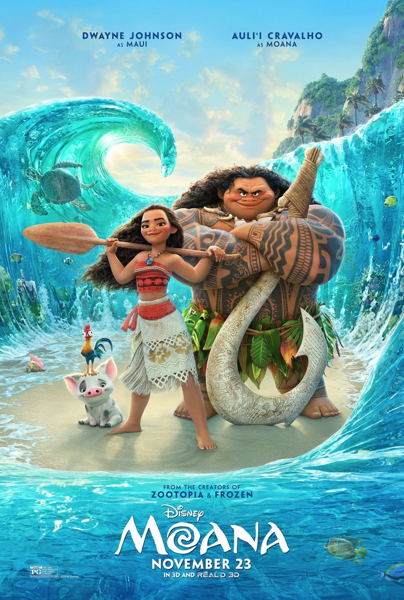
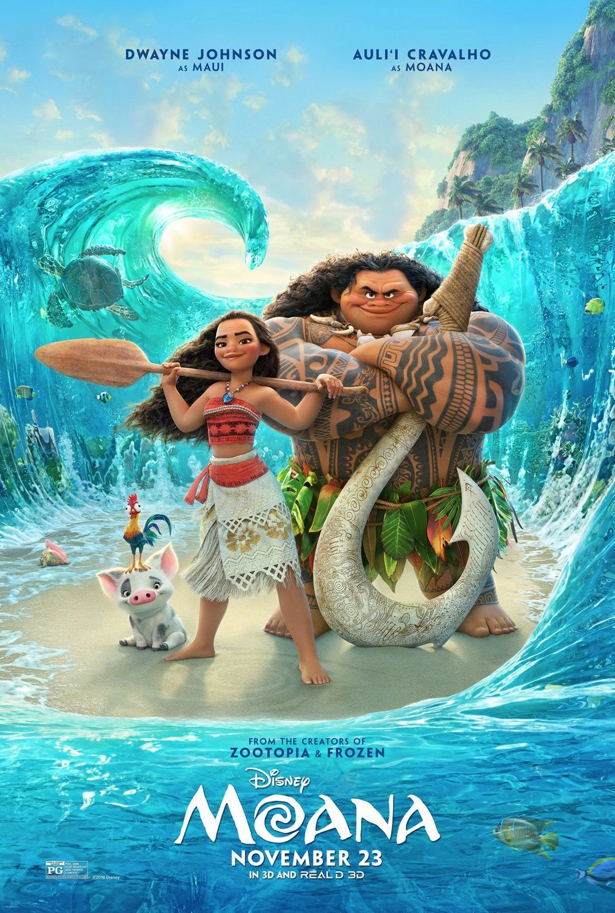

2016-2018
Filmes que marcaram a época :
- Os Dez Mandamentos: O Filme, lançado no dia 28/01/2016, dirigido por Alexandre Avancini
- Moana - Um Mar de Aventuras, lançado no dia 05/01/2017, dirigido por John Musker, Ron Clements.
- Vingadores: Guerra Infinita, lançado no dia 26/04/2018, dirigido por Anthony Russo, Joe Russo.
 


Músicas de sucesso na época:
2016:
- é Neto & Cristiano – “Seu Polícia” (Ao Vivo)
- Marília Mendonça – “Infiel” (Ao Vivo)
- Eduardo Costa – “Pronto Falei”
- Marcos & Belutti part. Fernando Zor – “Romântico Anônimo”
- Maiara & Maraisa – “Medo Bobo”
- Victor & Leo – “Vai Me Perdoando”
- Jorge & Mateus – “Sosseguei”
2017:
- Luan Santana – “Acordando o Prédio”
- Henrique & Juliano – “Vidinha de Balada”
- Zé Neto & Cristiano – “Cadeira de Aço”
- Maiara & Maraísa – “Sorte que Cê Beija Bem”
- Gustavo Lima – “Abre o Portão que eu Cheguei”
- Marília Mendonça – “Amante Não Tem Lar”
2018:
- Propaganda, Jorge & Mateus
- Largado as Traças, Zé Neto e Cristiano
- Apelido Carinhoso, Gusttavo Lima
- Amor de Verdade, MC Kekel e MC Rita
- Ao Vivo e a Cores, Matheus & Kauan e Anitta
Os acontecimentos que marcaram os anos de 2016-2018 foram:
- Em 2016 ocorreu os Atentados em Bruxelas.
- Em 2017 Donald trump assume a posse da presidencia dos EUA.
- Em 2018 Intervenção federal no Rio (e depois Roraima).